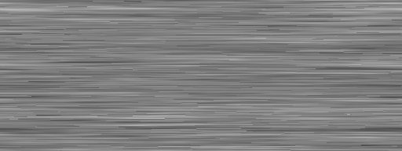
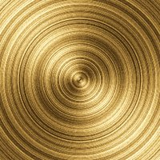
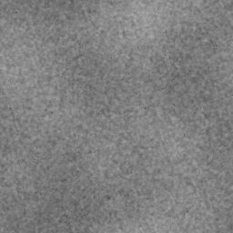
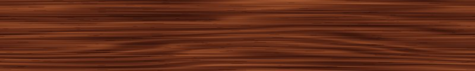
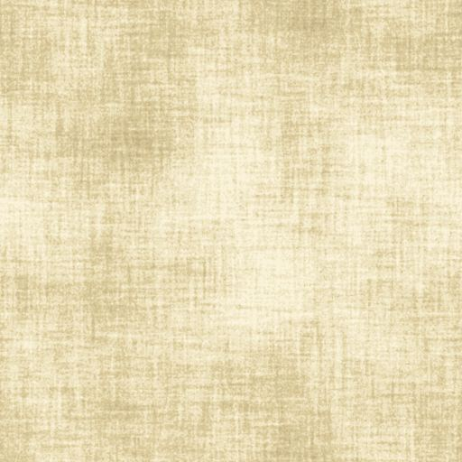
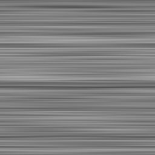

Train Management · specimens
Session only · campione tipografico
IndependentMatchingDifferentChangedStale
Campione messaggio · testo dimostrativo, non allarme R1
Campione di feedback
Superficie pergamena · VIRTUAL · nessun record applicativo
Typography & materials
Cinzel Decorative 700 · SerieN
Federo 400 · ÀÈÌÒÙ àèìòù 012345
Cutive Mono 400 · 0123456789

Brass brushed
Brass spun
Enamel green
Mahogany
Parchment
Steel brushed